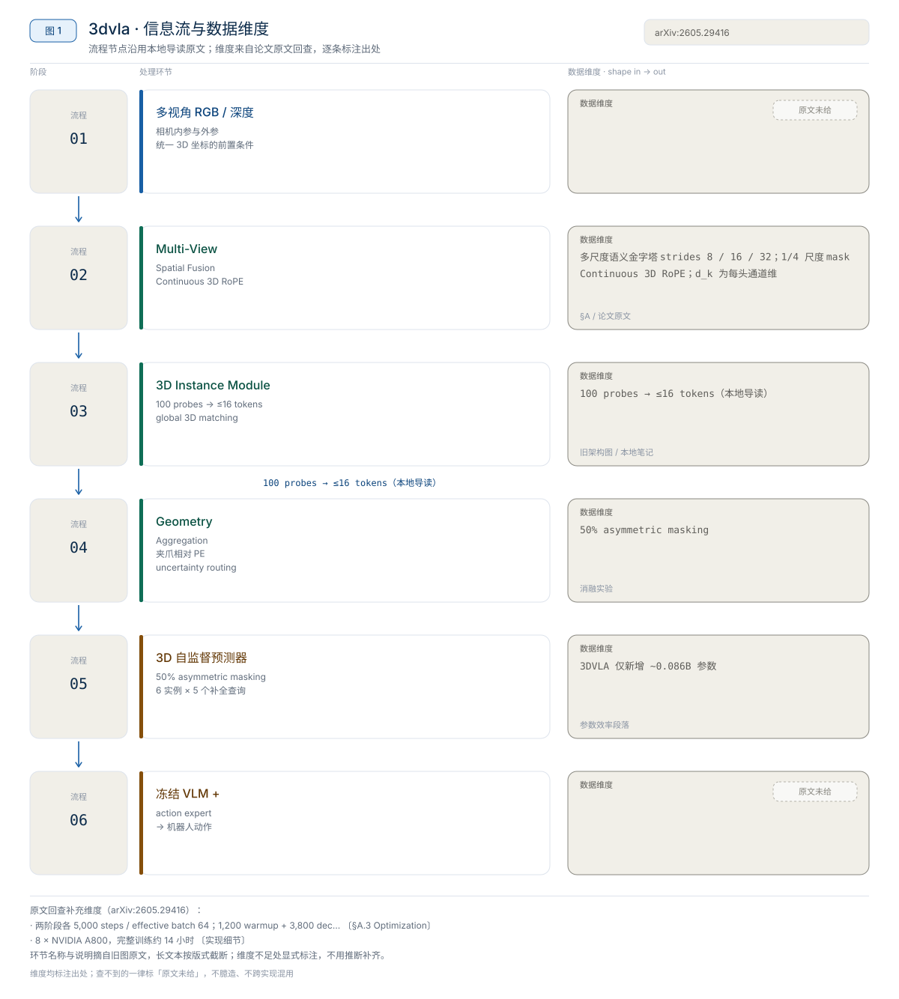

PhysBrain 1.0 论文精读：先学物理常识，再让双脑 VLA 学控制
PhysBrain 1.0 重新分配的是“物理常识”的训练位置——不把常识寄望于机器人轨迹里自然涌现，而是先用人类第一人称视频做一轮结构化物理监督，再在 VLA 适配时用双通路和语言正则把这份常识保护住。【章节】
3D 与物理
3DVLA 重新分配的是“3D 感知结果如何进入 VLA”的接口——不换 VLM，也不换动作头，而是把多视角观测整理成与 VLM token 兼容的 3D 实例 token、补全 token 和相对夹爪的空间偏置，拼回原 token 流交给 action expert。【章节】
3DVLA 不重训 VLA 基座，而是在已有 VLA 的 2D 视觉 token 与 action expert 之间插入四个模块：多视角空间融合、以物体为中心的 3D 实例、坐标驱动的遮挡补全预测器、空间条件几何聚合；大 VLM backbone 训练时冻结。章节转述的公开结果是：LIBERO-Plus 平均成功率把 π0.5 从 84.2 提到 86.0；RoboTwin 2.0 上 π0 的 Easy/Hard 从 46.4/16.3 提到 54.5/23.2，X-VLA 从 70.0/39.0 提到 72.6/42.1；两阶段训练在 4×A800 单节点上约 14 小时（Stage 1 约 5 小时、Stage 2 约 9 小时）；实例 token 预算为 100 个 probe 筛选后每场景最多 16 个，补全分支最多 6 个遮挡实例、每实例 5 个查询。以上均为章节转述的论文报告，未在本机复测，且只覆盖仿真 benchmark。
来源约定：本文事实只取自本仓库 3DVLA 导读。章节没有逐条标注论文页码，因此本文把实验数字统一记为“章节转述的论文报告”，不区分为作者原文或导读归纳。
版本：2026-05-28 提交（章节给的是 arXiv HTML v1 链接）；代码 commit：无（官方仓库未公开）；章节检索时间：2026-07-18；查阅日期：2026-11-01。
| 资源 | 网页来源 | 说明 |
|---|---|---|
| 论文 | arXiv:2605.29416 / HTML | 方法、四模块图与两张主实验表 |
| 源码 | 章节未给 | 截至 2026-07-18 未找到官方 GitHub 仓库 |
| 权重 | 章节未给 | 章节没有 checkpoint、模型卡或下载入口 |
| 项目页 | 章节未给 | 章节只给 arXiv 与 HTML，没有独立项目页 |
| 数据集 | 章节未给 | 训练数据未给；评测用 LIBERO-Plus 与 RoboTwin 2.0 |
论文题目：3DVLA: Enhancing Vision-Language-Action Models via 3D Spatial and Instance Understanding；作者单位：Wangxuan Institute of Computer Technology, Peking University；arXiv：2605.29416；版本：2026-05-28 提交；代码 commit：无；查阅日期：2026-11-01。
版本提示：章节只对应 arXiv v1，没有官方仓库，因此没有 commit、许可证或权重条款可核对。搜索 3DVLA 会命中 UMass-Embodied-AGI/3D-VLA，那是 2024 年另一篇 3D-VLA: A 3D Vision-Language-Action Generative World Model，题目、作者与方法目标都不同，不能当作北大这篇的实现。
一句话：3DVLA 重新分配的是“3D 感知结果如何进入 VLA”的接口——不换 VLM，也不换动作头，而是把多视角观测整理成与 VLM token 兼容的 3D 实例 token、补全 token 和相对夹爪的空间偏置，拼回原 token 流交给 action expert。【章节】

图 1：3DVLA 的 3D 空间、实例与遮挡补全信息流。自绘，依据本地导读；不是论文原图。
章节把 2D VLA 的痛点拆成三条：多视角图像没有统一到同一个 3D 坐标系；物体只有 2D 区域、缺少跨视角一致的实例表示；目标被遮挡时只能看到残缺外观。对应地，3DVLA 的四模块分别回答“在哪里”“是哪个物体”“看不见的部分是什么”“相对夹爪怎么用”。
对比主流路径：多视角 2D token 拼接 / attention 融合 → 统一 3D 坐标下的视觉记忆 + 3D 实例 token + 遮挡补全 token。
| 模块 | 输入 | 输出 | 章节给出的设置 |
|---|---|---|---|
| Multi-View Spatial Fusion | 多视角视觉特征、深度、相机内参/外参 | 统一 3D 空间中的视觉记忆 | Continuous 3D RoPE 把相对 3D 距离编进 attention 的 query/key |
| Object-Centric 3D Instance Module | 3D 记忆、多尺度 2D 特征、伪 box/mask | 跨视角一致的 3D instance token | 初始化 100 个 state probes；匹配与不确定性过滤后每场景 ≤16 个 |
| Coordinate-Driven 3D Self-Supervised Predictor | mask coordinates、completion coordinates | 遮挡/未观察区域的 completion token | 50% asymmetric multi-view masking；≤6 个遮挡实例 × 5 个查询 |
| Spatially-Conditioned Geometry Aggregation | instance token、completion token、夹爪位姿 | 空间 grounded 的 visual token | end-effector 相对 PE + uncertainty routing；末层 zero-init |
数据流一句话：图像 → 2D token → 反投影到统一 3D 记忆 → 实例分支与补全分支并行 → 按夹爪相对位置聚合 → 拼回 VLM token 流 → action expert 输出动作。章节没有给特征维度、层数、注意力头数或每帧 token 数，只给了上表的预算。
该模块解决的问题是“多个相机看到的是同一个世界”。很多 VLA 也吃多视角，但常见做法是把各视角 token 拼接或做 attention 融合，模型看到的仍是多个 2D 平面；左相机里杯子在画面右侧、腕部相机里杯子在画面中央，这两个 2D 位置并不能直接告诉 action expert 杯子相对夹爪在哪里。
3DVLA 利用相机内参、外参和深度，把多视角特征映射到统一 3D 空间，再用 transformer encoder 建立跨视角几何对应；Continuous 3D RoPE 把相对 3D 距离编码进 query/key，让 attention 能感知欧氏距离。章节给出的两个价值是跨视角一致性（同一物理点不会因换相机变成完全不同的 token）和动作可用性（物体位置进入机器人操作所需的空间参考系，而不停留在图像坐标）。
读论文图时看三件事：反投影用的是深度还是多视角三角化、3D 记忆的坐标原点在哪里、RoPE 编码的是绝对坐标还是相对距离。章节只给了“内参/外参 + 深度 + RoPE”这一层描述，没有给坐标系定义与实现细节。
来源：本地导读 §4–§5。
机器人操作里“看到物体”不够，还要知道哪个是目标、它在 3D 空间占什么位置、与夹爪关系如何。2D mask/box 在多视角下的天然问题是：同一物体在不同相机里形状、大小、可见区域都不同，逐视角单独匹配 instance 很容易 ID 冲突。
章节给出的做法是 3D probe。每个 probe 有两类状态：semantic state（这个实体是什么、语义特征是什么）与 3D reference point（实体在连续 3D 空间中的参考位置）。probe 会投影到不同相机视角，从多尺度 2D 特征里采样纹理与语义；为压低遮挡视角的噪声，模块引入 occlusion-aware gating，对不可靠视角降权。
最关键的细节是 global 3D matching：不是在每个视角里单独做 2D Hungarian matching，而是把伪标签从 2D box/mask 反投影成 3D centroid，再在 3D 空间里做全局匹配，使同一物理物体对应同一个 3D instance。伪标签来自 frozen perception model（章节举例 VL-SAM-v2 一类开放世界检测/分割模型），因此不需要额外人工 instance-level 标注。probe 数从 100 个经 matching 与不确定性过滤后保留每场景最多 16 个高置信 token。
读代码/实现时看：probe 的 3D reference point 如何初始化与更新、gating 的输入是可见性还是置信度、3D matching 的代价函数与阈值。章节未给这些实现细节。
来源：本地导读 §6。
多数自监督视觉方法在预训练时用 masked prediction，部署时丢掉 predictor、只留 encoder。3DVLA 反过来利用 predictor：机器人操作经常遇到遮挡，那就让 predictor 在 3D 坐标空间里补全不可见区域的 feature。
训练时定义两类坐标：mask coordinates 是自监督预测时被遮住的位置，completion coordinates 是真实场景中不可见或遮挡的几何位置。模型通过 asymmetric multi-view masking 学会从可见视角推断不可见结构；章节给出的比例是 50%，目的是避免模型只靠 2D 邻域插值“抄答案”，必须利用跨视角 3D 几何。
completion coordinates 的生成流程（章节给出五步）：
推理时不再随机 mask，而是直接用 completion coordinates 查询连续空间，生成 occluded feature；预算为最多 6 个被遮挡实例、每实例 5 个查询，即每次最多 30 个补全查询。章节对这一支的解释是动作稳定性：夹爪只看到杯子一侧时，抓取仍需要估计杯子整体的中心与边界。
来源：本地导读 §7。
3D 信息最终必须服务动作。聚合模块做两件事。
第一是 end-effector centric relative positional encoding。给 policy 绝对世界坐标不够，模型还得自己学“物体到夹爪的相对偏移”和运动学关系；3DVLA 直接把几何表示转成相对末端执行器的 offset，再用 sinusoidal / MLP 编码成 token。章节用一句话概括机器人真正需要的量：
$$
\Delta p = p_{\text{target}} - p_{\text{ee}}
$$
即“目标相对夹爪：前方 8 cm、左侧 2 cm、下方 4 cm”这类相对坐标，而不是世界坐标。
第二是 uncertainty-guided routing。如果 2D 视觉已经很确定，强行注入大量 3D completion feature 可能污染原本可靠的视觉表示；论文用 instance module 的分类 logit 估计不确定性，再决定是否注入局部 3D 几何上下文：实例置信度高时少注入，目标被挡住、视角模糊、实例不确定时多注入。routing 的最后线性层做 zero initialization 并设置常数 bias，让训练开始时接近 identity mapping，避免新模块一上来扰乱预训练 VLA 特征。
读实现时看：相对 PE 的参考系是夹爪当前位姿还是动作 chunk 末端位姿、routing 的标量如何由 logit 得到、zero-init 的常数 bias 取多少。章节只给设计意图，未给公式与超参。
来源：本地导读 §8。
协议：LIBERO-Plus 在 LIBERO 基础上做鲁棒性分析，含 Camera、Robot、Language、Light、Background、Noise、Layout 七类扰动，指标为 success rate。章节没有给任务数、每任务 trials、总 rollout 数、种子与成功判定细则，因此下表只能读相对趋势，不能复算置信区间。
| Method | Camera | Robot | Language | Light | Background | Noise | Layout | Avg. |
|---|---|---|---|---|---|---|---|---|
| WorldVLA | 0.1 | 27.9 | 41.6 | 43.7 | 17.1 | 10.9 | 38.0 | 25.0 |
| OpenVLA | 0.8 | 3.5 | 23.0 | 8.1 | 34.8 | 15.2 | 28.5 | 15.6 |
| NORA | 2.2 | 37.0 | 65.1 | 45.7 | 58.6 | 12.8 | 62.1 | 39.0 |
| UniVLA | 1.8 | 46.2 | 69.6 | 69.0 | 81.0 | 21.2 | 31.9 | 42.9 |
| π0-Fast | 65.1 | 21.6 | 61.0 | 73.2 | 73.2 | 74.4 | 68.8 | 61.6 |
| RIPT-VLA | 55.2 | 31.2 | 77.6 | 88.4 | 91.6 | 73.5 | 74.2 | 68.4 |
| OpenVLA-OFT | 56.4 | 31.9 | 79.5 | 88.7 | 93.3 | 75.8 | 74.2 | 69.6 |
| π0 | 61.0 | 40.8 | 63.5 | 89.3 | 84.1 | 80.1 | 76.4 | 69.4 |
| π0.5 | 71.2 | 77.1 | 89.9 | 94.7 | 94.0 | 84.2 | 84.3 | 84.2 |
| π0.5 + 3DVLA | 75.6 | 77.4 | 88.6 | 97.4 | 97.7 | 85.3 | 86.6 | 86.0 |
读法：最值得看的是 Camera（71.2 → 75.6）与 Layout（84.3 → 86.6），说明 3D 空间锚定对视角和布局扰动更敏感；Language 从 89.9 降到 88.6，说明它增强的不是语言理解。平均值的 +1.8 是在一个已经很强的 π0.5 基座上取得的，不能解读为“3DVLA 单独训练就能达到 86.0”。
协议：RoboTwin 2.0 强调多视角、接触、双臂、遮挡与物理丰富的操作任务，分 Easy / Hard 两档；章节没有给任务数、每任务 trials、场景配置与成功判定。
| Method | Easy | Hard |
|---|---|---|
| DP | 28.0% | 0.6% |
| ACT | 29.7% | 1.7% |
| RDT | 34.5% | 13.7% |
| DP3 | 55.2% | 5.0% |
| π0 | 46.4% | 16.3% |
| π0 + 3DVLA | 54.5% | 23.2% |
| X-VLA | 70.0% | 39.0% |
| X-VLA + 3DVLA | 72.6% | 42.1% |
读法：同一插件插到两个不同 VLA 上都有增益，支持章节的 plug-and-play 叙事；π0 的 Easy +8.1、Hard +6.9，X-VLA 的 Easy +2.6、Hard +3.1（差值按上表相减）。Hard 通常包含更强遮挡、更复杂接触与更细粒度空间关系，因此 Hard 的提升比 Easy 更能说明 3D 实例与补全不是只在简单视觉扰动里有用。
章节未给真机实验；LIBERO-Plus 与 RoboTwin 2.0 都是仿真 benchmark，尚无真实机器人上的遮挡、标定误差、传感器噪声与接触偏差证据。
来源：本地导读 §10；数字均为章节转述。
章节只给“模块逐步叠加”的消融，没有逐模块替换、去掉 RoPE、改 probe 数或改补全查询数的细粒度消融。
| Model | Instance | Predictor | Routing | RoboTwin Easy | RoboTwin Hard |
|---|---|---|---|---|---|
| π0 baseline | 46.4% | 16.3% | |||
| A | ✓ | 50.1% | 18.9% | ||
| B | ✓ | ✓ | 53.4% | 21.8% | |
| C | ✓ | ✓ | ✓ | 54.5% | 23.2% |
| X-VLA baseline | 70.0% | 39.0% | |||
| A | ✓ | 71.3% | 40.4% | ||
| B | ✓ | ✓ | 72.1% | 41.6% | |
| C | ✓ | ✓ | ✓ | 72.6% | 42.1% |
收益拆解（本文按上表相减）：π0 上 Instance 单独 +3.7/+2.6，加 Predictor 再 +3.3/+2.9，加 Routing 再 +1.1/+1.4；X-VLA 上三段分别是 +1.3/+1.4、+0.8/+1.2、+0.5/+0.5。三个模块是累积增益，梯度在第二个模块后开始变小，但仍然同向。
读者该不该复用：如果基座本身没有 3D 实例能力，Instance 模块是收益最大的一块；Predictor 的收益依赖遮挡场景是否足够多；Routing 的增益最小，但它承担“保护原表征”的职责，属于稳定性设计而非主要涨点项。章节没有给 LIBERO-Plus 上的同款消融，也没有给任一模块的单独去除实验，因此不能判断模块间是否存在冗余。
来源：本地导读 §10.3。
章节没有给参数量、推理显存、单步延迟、完整请求延迟或重规划间隔；只给了训练与评测的墙钟时间。因此不能从模块数量推算推理开销，也不能用 1000 / 延迟 计算策略调用频率。
| 项目 | 章节给出的数值 | 口径 |
|---|---|---|
| 参数量 | 章节未给 | 无法与 7B / 2B 级 VLA 横向比较 |
| 推理显存 | 章节未给 | 无法判断单卡部署门槛 |
| 单步 / 请求延迟 | 章节未给 | 无法判断能否进控制回路 |
| 重规划间隔 | 章节未给 | 动作 chunk 长度与频率未给 |
| Stage 1 + Stage 2 训练 | 约 14 小时 | 4×A800 单节点，Stage 1 约 5 h、Stage 2 约 9 h |
| 完整仿真评测 | 约 14 小时 | 8×A800；瓶颈在仿真渲染与物理 step，不是模型推理 |
读法：章节明确说评测更耗时、瓶颈在渲染和物理 step，这句话只能说明评测吞吐受环境限制，不能反推模型前向很快。训练 14 小时说明它是插件式增量训练而非重训基座，但 4×A800 与 8×A800 的配置对个人复现仍不低。实际部署必须本机分别测裸模型前向、含图像/深度预处理与通信的请求延迟、以及两次重规划之间的间隔。
来源：本地 3DVLA 导读的对应小节。
章节给了两阶段策略与算力，但没有给优化器步数、有效 batch、每卡 microbatch、梯度累积、学习率、warmup、EMA 或数据配比，因此无法填出完整训练配方，也无法用 B_eff = N_GPU × B_micro × N_accum 反推有效 batch。
| 训练项目 | Stage 1 | Stage 2 |
|---|---|---|
| 训练模块 | Multi-View Spatial Fusion、3D Instance Module、action expert | 3D Self-Supervised Predictor、Geometry Aggregation，继续更新 action expert |
| 冻结模块 | 大 VLM backbone | Stage 1 模块 + 大 VLM backbone |
| 目的 | 先学稳定的 2D-to-3D 实例锚定 | 再学遮挡补全与几何聚合，避免连续 feature regression 早期训练崩掉 |
| 硬件 | 4×NVIDIA A800，单节点 | 同左 |
| 耗时 | 约 5 小时 | 约 9 小时 |
| batch / 学习率 / 步数 | 章节未给 | 章节未给 |
章节另外给了三个实现预算：Instance Module 初始化 100 个 state probes，过滤后每场景最多 16 个 token；Predictor 最多处理 6 个遮挡实例、每实例采样 5 个 completion coordinate queries；训练时只更新新增 3D 模块与 action expert。
三级复现的可行性：
来源：本地 3DVLA 导读的对应小节。
官方仓库未公开，下表只能给“代码放出后按什么顺序读”，所有路径都需按未来 commit 核对，章节未给任何文件路径。
| 顺序 | 模块 | 阅读重点 | 路径状态 |
|---|---|---|---|
| 1 | 多视角融合 | 反投影、3D 记忆坐标系、Continuous 3D RoPE 的 q/k 注入位置 | 章节未给 |
| 2 | 3D instance | 100 个 probe 的初始化与更新、occlusion-aware gating、3D centroid 全局匹配、top-16 筛选 | 章节未给 |
| 3 | 3D predictor | 50% asymmetric masking、completion coordinate 五步生成、6×5 查询 | 章节未给 |
| 4 | 几何聚合 | end-effector 相对 PE、uncertainty routing、末层 zero-init | 章节未给 |
| 5 | 与原 VLA 的拼接 | 3D token 插在视觉 token 的哪个位置、action expert 如何消费 | 章节未给 |
| 6 | 数据与伪标签 | frozen perception model 的选择、box/mask 反投影、域偏移处理 | 章节未给 |
坑（章节明确提示或可直接推出）：
UMass-Embodied-AGI/3D-VLA 是 2024 年另一篇工作，clone 它不会得到本文实现。当前没有官方 checkpoint，也没有官方命令。下面只能给出“等代码放出后”的最小验证顺序，全部标为教学占位，未在本机验证。
# 教学占位：不是官方命令；官方仓库未公开
nvidia-smi
python -c "import torch; print(torch.__version__, torch.cuda.device_count())"需要准备的不是一个数据集路径，而是一套几何输入：多视角 RGB、depth、camera intrinsics、camera extrinsics，以及所有视角共享的 3D 坐标定义。缺任何一项，Multi-View Spatial Fusion 都会退化成普通多视角特征融合。
先用 frozen perception model 生成 2D box/mask，再反投影成 3D centroid 做全局匹配；检查同一物理物体在不同视角是否落到同一个 instance ID。章节把这一步称为 global 3D matching，它是与“逐视角 2D 匹配”最本质的区别。
按章节五步检查：mask → raw point cloud → 密度聚类去噪 → point cloud completion network → 远离可见点采样 → farthest point sampling。任何一步的可视化都应能回答“这些 query 是否落在真正不可见的区域”。
LIBERO-Plus 要按 Camera / Robot / Language / Light / Background / Noise / Layout 七个扰动分别汇总；RoboTwin 2.0 要分 Easy / Hard。章节没有给 trials 与种子，复现时应自行固定并在报告中写明。
章节建议代码放出后优先回答：
来源：本地导读 §13。
3DVLA 的价值是把“3D 感知”从独立检测任务改造成 VLA 的 token 接口：模块可以换、检测器可以换，但“统一 3D 坐标 → 跨视角实例 → 遮挡补全 → 相对夹爪聚合”这条链路是可复用的设计。
p_target - p_ee 再编码，接到任意动作头上；测换初始位姿、换夹爪朝向时的稳定性。代价是要有可靠的末端位姿与外参标定。相关章节：OpenVLA、RT-2、Galaxea G0.5、3DVLA 导读、02 论文与评测。